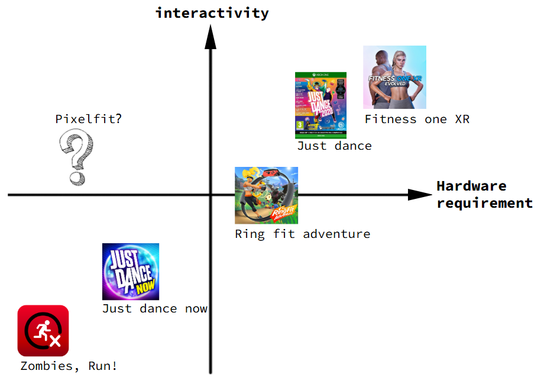
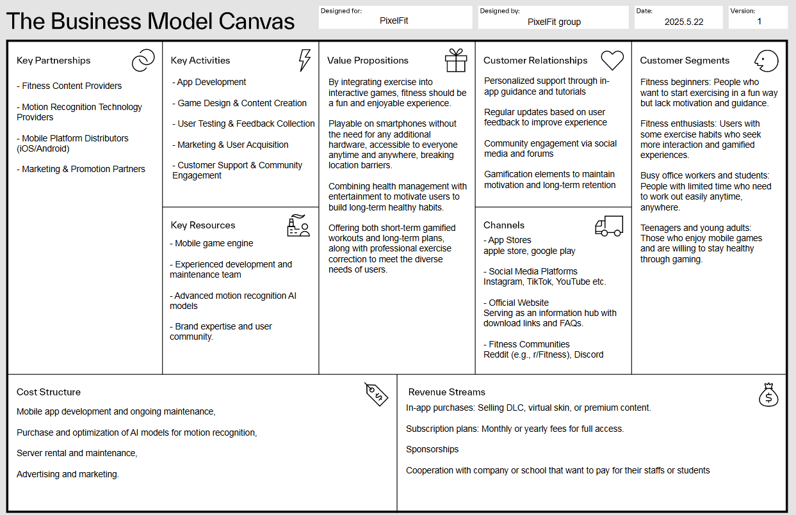

Project Background: What It Is and Why We Did It
This was a four-person group assignment that I completed with three other classmates, Chi Chen, Haoran Cao and Ji Gao, in the elective course Technology-based Entrepreneurship (ME2062) at KTH Royal Institute of Technology: a complete 15-page business plan (about 6,300 words) for a product called PixelFit. It was not a technical breakthrough, but a full walkthrough from "discovering a problem" to "verifying whether the product can work as a business". The table of contents covers the value proposition, target market, competitor analysis, three-year financial forecast, sustainability, team and ecosystem, regulatory compliance and feasibility assessment, plus a Business Model Canvas and design-thinking research. It is a standard business-plan structure for an entrepreneurship course.
The starting point was simple: data from the World Health Organization shows that over 1.4 billion adults worldwide are insufficiently physically active, and sitting for long periods, especially more than 7 hours a day, is associated with higher cardiovascular disease, metabolic problems and even all-cause mortality. But there is a gap between "everyone knows they should move more" and "everyone actually moves". We used the Fogg Behavior Model (motivation, ability, prompt) to break this problem down, and found that what is truly scarce is often not motivation or ability but the "prompt": a reminder that happens to interrupt sitting while you are buried in work or scrolling on your phone.
PixelFit's solution is a phone app that uses narrative to drive light stretching and activity. The player plays a protagonist "traveling" through a game world, advancing the story by completing simple coach-guided movements, combined with personalized reminders every 30 or 60 minutes. The earliest prototype directly borrowed the character settings of The Little Prince for its narrative (see the figure below), using the phone's camera for pose detection to drive the movements of a pixel-art character. This version of the prototype verified the core technical feasibility question of whether a phone camera can recognize usable enough motion signals. But later, during intellectual property due diligence, we judged that continuing to use The Little Prince's characters and plot carried copyright risk, so the team decided to replace all derivative elements with a fully original world and storyline, which is also a product/legal judgment specifically mentioned in the business plan.

Target Users and Market Assessment
We did not treat "everyone who wants to work out" as the target user, but defined two explicit personas: university students who sit in class for long hours, and white-collar workers who sit more than 8 hours a day, aged roughly 15–45 (based on the European population structure). Behind this definition is a multi-layer filtering logic rather than numbers pulled out of thin air:
- TAM (total addressable market): The European population aged 15–45 is about 230 million, and according to Eurostat/WHO data about 36% meet the "sedentary" criterion (sitting more than 6 hours a day), giving about 82.8 million people.
- SAM (serviceable available market): On this basis, filtering by a smartphone penetration rate of about 95% in this age range gives about 78.7 million people. The point of this step is to exclude those who, even if they have the need, cannot be reached by the product format (a pure phone app that depends on the camera).
- SOM (serviceable obtainable market): Layering on the behavioral filter of "interested in casual/narrative mobile games" (based on Statista data, about 35–40% of Europeans aged 18–35 play casual mobile games), and estimating at a conservative 35%, gives about 27.5 million people.
- Pilot market Sweden: Based on 1.5 million+ white-collar workers plus 450,000 university students, and layering on a sedentary rate of about 60% and a gaming participation rate of 35%, we land at an initial obtainable user base of about 110,000–130,000 people.
The value of this TAM/SAM/SOM breakdown lies not in how precise the numbers are, but in forcing us to split the intuitive judgment "is this a good idea" into several assumptions that can each be checked and falsified: smartphone penetration, sedentary proportion, casual gaming penetration. Each layer can be overturned or corrected by industry data on its own, which holds up far better under investor questioning than the claim "Europeans all really want to work out".
Competitive Landscape and Differentiated Positioning
In the business plan we did not position PixelFit as "yet another fitness app" or "yet another fitness game", but drew a competitor positioning map along two dimensions, hardware barrier and interaction precision, and placed representative products on the market into it:
- Low-cost mass-market route: Zombies, Run! (a pure-audio-driven running game that relies on the phone's accelerometer + GPS, with almost zero hardware barrier but no real-time motion feedback), and the mobile version of Just Dance (recognizing hand movements through the gyroscope, slightly more interactive but still shallow).
- High-cost core-gamer route: Ring Fit Adventure (dedicated Switch hardware with high motion-tracking precision), motion-sensing games on the Kinect platform (depth camera, high precision but the device has been abandoned by Microsoft), and VR fitness (FitXR, Supernatural and others: the most immersive, but with the highest hardware cost and limited usage scenarios).
Laying these products out in a comparison table by hardware cost and payment model shows a clear pattern: the more complex the hardware, the finer the motion recognition, but the user barrier and cost also rise linearly. Almost no product on the market achieves both "zero extra hardware" and "near console-grade motion feedback precision". What PixelFit wants to occupy is exactly this previously vacant quadrant: motion capture with the phone camera, requiring no extra hardware, while pursuing a deeper interaction precision than "swing the phone and listen to audio".
To be frank, on the positioning map we ourselves marked this position with a question mark. It is not an established fact but a product hypothesis to be verified. Whether the phone camera can stably recognize the motion precision needed to support the gameplay is the single most central technical feasibility risk of this project, and the business plan devotes an entire section to it without dodging.
From the wider industry background, this direction itself stands on a clearly expanding track: according to a Metatech Insights report, the global fitness game app market was about USD 1.38 billion in 2024 and is expected to grow to USD 8.21 billion by 2035, a compound annual growth rate of about 17.6%; Sensor Tower's State of Mobile 2025 also shows that global downloads and in-app purchase revenue of health and fitness apps keep growing. Market growth cannot replace product validation, but it at least shows that we are not telling a story in a shrinking field.
Business Model and Financial Feasibility
The Business Model Canvas (see the figure below) breaks the business into a dual revenue structure: subscriptions for individual users (B2C) and licensing of a health incentive platform to companies and schools (B2B). This is also the design the business plan repeatedly stresses as "spreading risk and raising the revenue ceiling":
- B2C subscription: The core gameplay is free, and a subscription (SEK 50/month or SEK 500/year) unlocks value-added content such as an AI coach, extra storylines and multi-character interaction. Lowering the entry barrier with free play and then monetizing through value-added services is a typical freemium approach.
- Microtransactions and ads: In-app purchases such as virtual postcards and skins, plus rewarded ads that unlock content, cover the long tail of users who don't want to pay for a subscription but can still contribute some revenue.
- B2B corporate/campus partnerships: Provide health incentive platforms and customized features to companies and universities, with an annual fee in the range of SEK 20,000–30,000, targeting the steadier, higher-ticket channel of "employee benefits".

The financial projection is the part I think best shows "business judgment" rather than "piling up numbers". We took Sweden as the initial market and put the key assumptions in the open: an initial obtainable market (SOM) of about 120,000 users; a paid conversion rate assumed at 2.5%–5% (based on industry benchmarks for freemium apps, a fairly conservative estimate); in year two, an expected 3,000–6,000 paying users at an average subscription of SEK 500/year, plus microtransactions and ads at an ARPU of about SEK 20 per user per year, plus 5–8 B2B customers. On this basis we built a unit economics model: customer acquisition cost (CAC) of about SEK 65 per user and ARPU of about SEK 40 per user per year; assuming a three-year active lifetime and a 2.5%–3% paid conversion, lifetime value (LTV) comes to about SEK 120, and LTV/CAC is about 1.85, which falls in the "healthy but with room for improvement" range, with a payback period of about 18 months. To check that the model doesn't hold "only under ideal conditions", we also did a sensitivity analysis: even if the conversion rate is pushed down to the most conservative 2%, the business can keep running as long as B2B revenue is added. The funding plan is correspondingly restrained: first seek roughly SEK 100,000 in pre-seed funding (through channels including the KTH Innovation incubator, the Vinnova startup fund and local Swedish health-tech angel investors), allocated 30% to product development, 40% to marketing and customer acquisition, 20% to operations and data analytics tools, and 10% to an emergency reserve, rather than promising pie in the sky from the start.
I would also like to honestly leave a reflection here: when we rechecked the materials afterwards, we found that the business plan's two statements about "year-three revenue" were not fully consistent. The conclusion paragraph in the main text gives about SEK 1.85 million, but in the appendix tables the subscription revenue is set to jump from SEK 1.5 million in year two to SEK 30 million in year three, so the total revenue summed in the appendix becomes SEK 30.35 million, an order of magnitude off from the figure in the conclusion. This is probably because, when the group adjusted its assumptions late in the process, it did not update every place that cites the same set of numbers. Looking back, this reminds me that a financial model must have its key numbers cross-checked one by one before being delivered to investors. A financial forecast that doesn't even agree with itself loses a great deal of credibility, which matters more than whether the numbers look "pretty" enough.
Team Division of Labor and My Contribution
It needs to be made clear that PixelFit was a four-person group course assignment, not a project I completed independently. The "Team and Ecosystem" section of the business plan is fairly explicit about everyone's background and role, and I relay it faithfully here:
- Haoran Cao: Autonomous systems and robotics track, responsible for the app's technical backend and system integration.
- Ji Gao: A background in software engineering and interaction design, with real experience in product management and agile project coordination in the internet industry, mainly responsible for development timeline planning and team task coordination, taking on a role close to project manager.
- Chi Chen: Currently studying human-computer interaction design, with 8 years of professional design experience, and also an ACSM-certified personal trainer. Responsible for interface design, visual storytelling and, most critically, the biomechanical soundness of the movement design itself (for example, whether the micro-exercises designed for office workers are ergonomic, and how to design a progressive intensity curve).
- Me (Qin Yongze): Also in the autonomous systems and robotics track, with side experience developing indie games in Unity and having taken part in deep learning projects including image generation. The business plan states explicitly that my contribution was to bring this experience with interactive digital content into the product. I mainly took part in design judgments at the "gameplay" layer: how to translate dull stretching movements into immersive level pacing and character growth curves, making "completing one movement" itself fun. I was not the one who actually wrote the market sizing or financial modeling sections (those two sections were produced through joint discussion and collaboration by the team).
The business plan itself also candidly states the team's weaknesses: there are no dedicated marketing and finance people, which would be an obvious bottleneck when the project truly scales up, requiring outside advisors or new members to fill the gap. I think this kind of honesty in "admitting what we lack" is itself part of the product/business judgment shown in this plan.
Takeaways and Reflections
The greatest value of this project for me lies not in verifying some specific technical solution but in going through the complete chain of product/business judgment: "discover the problem → define the users → break down market size → analyze the competitive landscape → design the business model → work through financial feasibility → acknowledge risks and shortcomings", and doing it in a real setting where the course reviewers would question whether our assumptions held up. A few specific takeaways:
- Market size isn't shouted out, it's broken down: The TAM/SAM/SOM funnel logic forced us to split the statement "intuitively the market is big" into several assumptions that can each be verified or falsified with industry data. I have kept using this habit when looking at other product opportunities since.
- Differentiated positioning has to withstand the question "why us?": The question mark on the competitor positioning map is where we were most honest with ourselves. Occupying a blank quadrant sounds appealing, but if the technical premise supporting that positioning (the motion recognition precision of a phone camera) has not been verified, the positioning is still just a vision, not a conclusion.
- A financial model's credibility comes from internal consistency, not the size of the numbers: The year-three revenue figure that didn't line up in our own model was a very concrete lesson. A beautiful growth curve that can't survive cross-checking will instead discount the credibility of the whole business plan.
- Honestly admitting the team's weaknesses is itself a kind of judgment: Rather than writing every link as seamless, it is better to state clearly that "we currently have no dedicated marketing/finance people, and this will be the bottleneck when expanding". This has directly shaped my understanding of what a reliable business proposal looks like.
These are the abilities I most want to explain clearly as I prepare to move toward roles such as AI product manager, GTM (go-to-market strategy) and product operations: not "I understand technology", but "given a vague product idea, I know how to break it into business judgments that can be verified, tested by numbers, and withstand challenge".